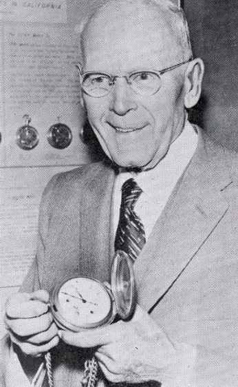

Dr. W. Barclay Stephens

SF Chapter 5 is named in memory of Dr. W. Barclay Stephens, the great horologist and philanthropist.
Price Russ has compiled a highly extensive collection of writing and information regarding Dr. Stephens. The information is taken from publications of the National Association of Watch and Clock Collectors and the California Academy of Sciences, Dr. Stephens’ scrapbook and chapter members.
The collection is in three PDF files:
- Information About W(illiam) Barclay Stephens, M. D. (PDF, 29 pages) Contents, biographical material and his autobiography
- The William Barclay Stephens Horological Collection (PDF, 28 pages) His collection, its donation and selected papers by Dr. Stephens
- Misc. Media Mentions (PDF, 14 pages) Pages from Dr. Stephens’ scrapbook, shared by his family